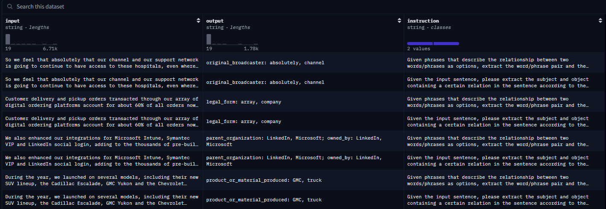

FinRED
Description
FinRED is an open‐source relation extraction dataset specifically curated for the financial domain, addressing the lack of domain‐focused RE resources. It contains annotated triples drawn from financial news and earnings call transcripts, aligned via distant supervision to Wikidata and manually validated for evaluation.
Dataset Creators
Soumya Sharma, IIT Kharagpur
Tapas Nayak, IIT Kharagpur
Arusarka Bose*, IIT Kharagpur
Ajay Kumar Meena*, IIT Kharagpur
Koustuv Dasgupta, Goldman Sachs
Niloy Ganguly, IIT Kharagpur & LU Hannover
Pawan Goyal, IIT Kharagpur
(* indicates corresponding authors)
Task Description
Relation extraction models must identify and classify semantic relationships between entity pairs in financial text, mapping them to a predefined set of relation types relevant to finance (e.g., “acquired_by”, “reported_earnings”, “appointed_ceo”).
Key characteristics: - Source texts: Financial news articles and earnings call transcripts - Annotation:
Training and development data aligned by distant supervision from Wikidata triplets
Manually annotated test set for robust evaluation
Relation types: A comprehensive set covering finance‐specific relations (e.g., mergers & acquisitions, executive appointments, financial performance metrics)
Size: Tens of thousands of auto‐labeled training instances; several hundred manually validated test instances
Format: JSON lines, with each record containing “head_entity”, “relation”, “tail_entity”, and sentence context
Licensing & Availability: Publicly released under CC BY‐NC 4.0 on GitHub and Hugging Face
Example dataset (https://huggingface.co/datasets/FinGPT/fingpt-finred-re):
{kind=link}

Evaluation Metrics
Precision, Recall, F1 (micro and macro) over relation types
Accuracy of relation classification
References
@misc{sharma2025finred,
title = {FinRED: A Dataset for Relation Extraction in Financial Domain},
author = {Sharma, Soumya and Nayak, Tapas and Bose, Arusarka and Meena, Ajay Kumar and Dasgupta, Koustuv and Ganguly, Niloy and Goyal, Pawan},
howpublished = {\url{https://github.com/soummyaah/FinRED/}},
year = {2025},
note = {CC BY-NC 4.0}
}